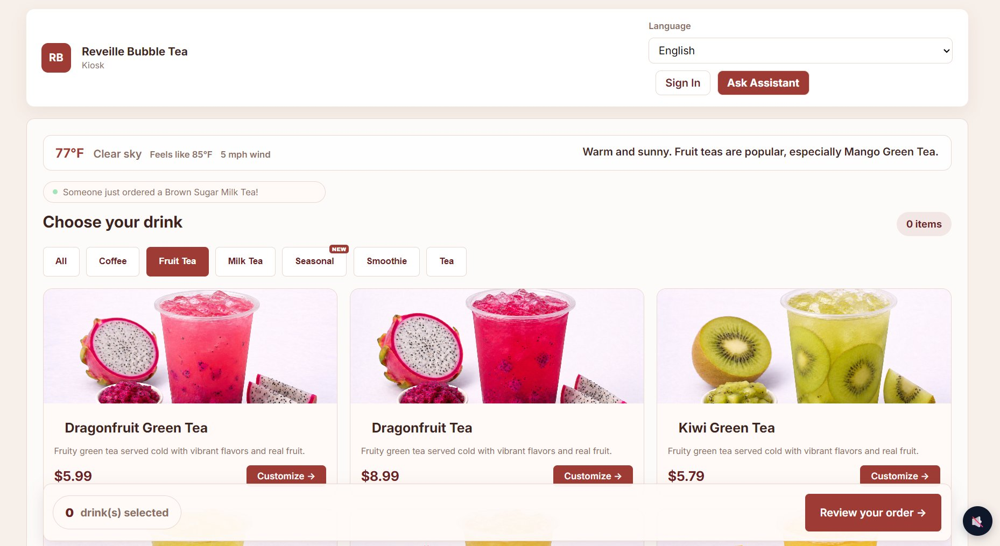

LIVE SITE
01Full-Stack · Team Project
Reveille Bubble Tea ↗
A complete point-of-sale platform for a bubble-tea shop: a customer kiosk, a cashier terminal, and a manager dashboard, all on one shared API and database. Deployed live on Render.
Click to explore →